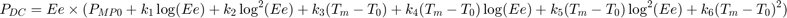
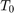
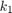
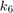
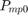

pvl_huld
Huld PV module model.
Contents
Syntax
DCPower = pvl_huld(Module, G, Tm)
Description
Determine the DC power output of PV module from in-plane effective irradiance and module temperature using the following polynomial:

The Huld model assumes a reference temperature  = 25C.
Inputs
- Module - A struct defining the parameters for the module.
Module contains the following fields:
- Module.k - A 1x6 vector with the coefficients  through .
- Module.Pmp0 - Power at STC reference condition (W).
- Ee - The effective irradiance incident upon the module (suns).
- Tm - The module temperature (degrees C).
Outputs
- DCPower - A vector containing the Pmp for each input Ee and Tm.
Example
This example shows the use of the Huld model with the generic cSi module parameters listed in [1], Table 7. The coefficients given in [1] are for normalized efficiency, thus  is set to 1.
Module.k = [-0.01724 -0.04047 -0.0047 1.49E-4 1.47E-4 5.0E-6];
Module.Pmp0 = 1; %
Ee = 1; %suns Tm = 55; % deg C Result = pvl_huld(Module, Ee, Tm)
Result =
0.8635
References
[1] T. Huld, G. Friesen, A. Skoczek, R. Kenny, T. Sample, M. Field, E. Dunlop, 2011. A power-rating model for crystalline silicon PV modules, Solar Energy Materials and Solar Cells 95, pp 3359-3369.
Copyright 2015 Sandia National Laboratories